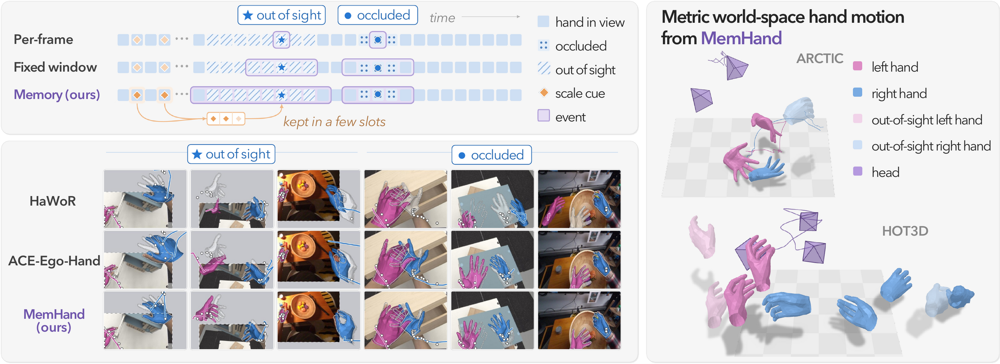
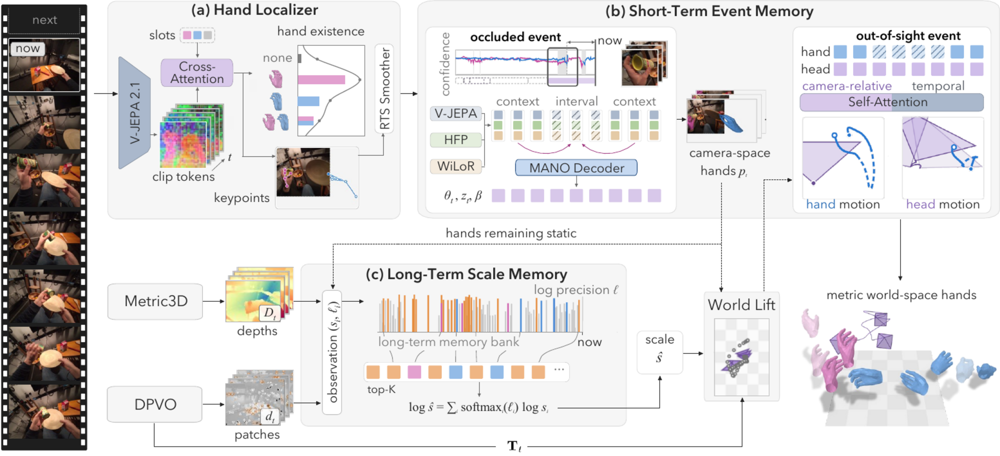
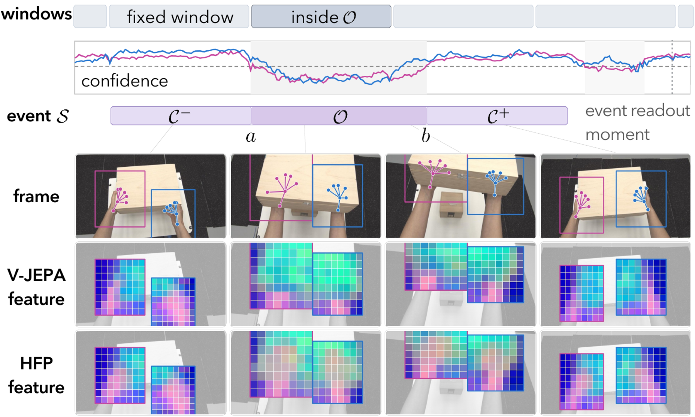

Abstract
Recovering the continuous world-space motion of both hands from egocentric video is essential for applications such as human-to-robot policy transfer and augmented reality. Achieving this goes beyond reconstructing the hands from each individual frame, as the context that a frame needs is often spread over time, especially around occlusions or when a hand moves out of sight. Recent works have explored how to exploit temporal context, yet they mostly draw it from fixed-length windows. Such windows cannot guarantee that every frame has the context required to reconstruct the hands in world space with accurate poses and metric scale.
To address this limitation, we introduce MemHand, a memory-enhanced framework for world-space hand motion reconstruction. MemHand maintains two complementary forms of memory. The Short-Term Event Memory keeps the context of the well-observed hand around each occlusion or out-of-sight event and supplies it to frames with weak or missing visual evidence. In addition, since the metric scale holds over the whole recording, the Long-Term Scale Memory retains the most reliable observations across the video as scale anchors within a bounded state.
Across benchmarks featuring severe occlusions and frequent out-of-sight intervals, MemHand achieves state-of-the-art accuracy and generalizes well to unseen domains. Benefiting from the synergy of both memories, it cuts W-MPJPE by 57% on ARCTIC and 70% on HOT3D relative to StableHand, delivering continuous and metrically accurate world-space hand poses and trajectories.
Video
Method


Comparisons
This view has not been rendered yet.
Camera
World
The input has no world view.
Citation
@misc{ma2026memhand,
title = {MemHand: Memory-Enhanced World-Space Hand Motion Reconstruction from Egocentric Videos},
author = {Ma, Junyi and Qi, Zhangshuo and Zhang, Erhang and Li, Mingjie and Wang, Hesheng},
year = {2026}
}